Neural population dynamics in development and motor control
Ben Lansdell
Applied Mathematics, UW
June 5th 2017
Tobias Rose, Max Planck Institute for Neurobiology
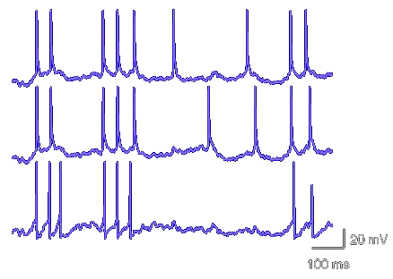Harvey et al 2009
Three problems
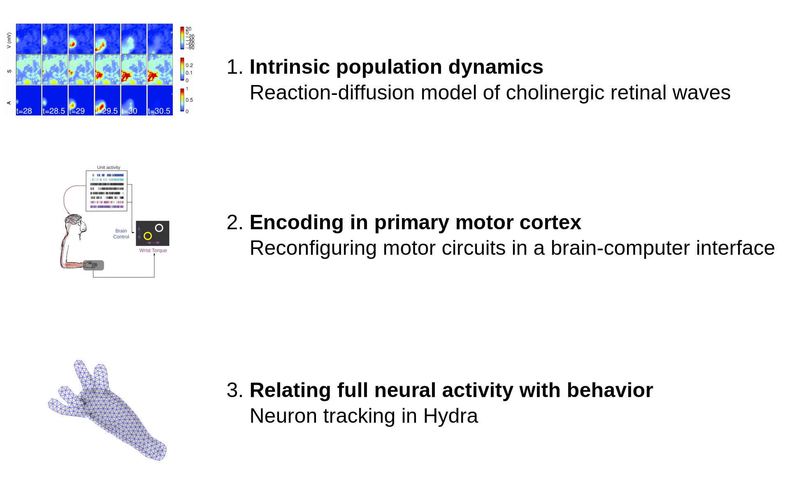Three problems
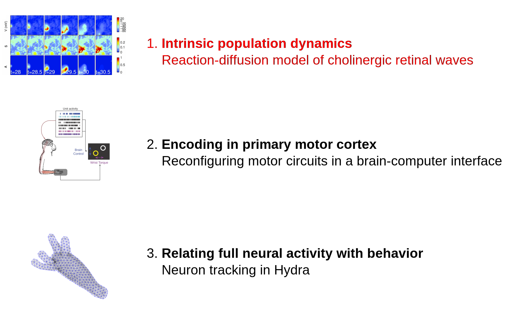Intrinsic population dynamics
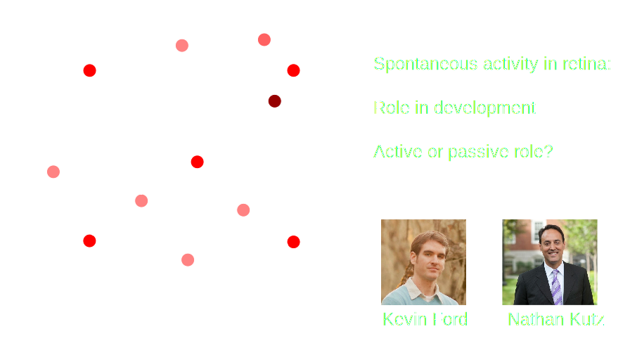Retinal waves initiated and propagated by starburst amacrine cells (SACs)

Josh Morgan 2005 (http://wonglab.biostr.washington.edu/research.html)
Retinal waves initiated and propagated by starburst amacrine cells (SACs)
Ford et al 2012
Reaction-diffusion model of retinal waves
$$\begin{align*} C_{m}V_{t} & = -{\color{red}g_{Ca}(V-V_{Ca})}-{\color{green}g_{K}(R,S)}{\color{red}(V-V_{K})}-{\color{red}g_{L}^{M}(V-V_{L})}-\\
& {\color{orange}g_{ACh}(V-V_{syn})}-{\color{blue}g_{n}^MN(V-V_{Ca})} \end{align*}$$
-
Morris Lecar dynamics
-
Slow after-hyperpolarization (sAHP) current:
$$S_t = \gamma G(V) +S/\tau_S$$ -
Noise current initiates waves spontaneously: $N$ a Bernoulli RV
-
Diffusion/local coupling of ACh spreads waves:
$$\begin{align*} g_{ACh}(A) &= g_{ACh}^M\frac{\delta A^2}{1+\delta A^2} \\ A_t &= D\nabla^2 A + \beta G(V) -\frac{A}{\tau_{ACh}} \end{align*}$$
Amacrine cell network as an excitable medium
Lansdell, Ford and Kutz PLoS Comp Bio. 2014
Model produces realistic cholinergic retinal waves
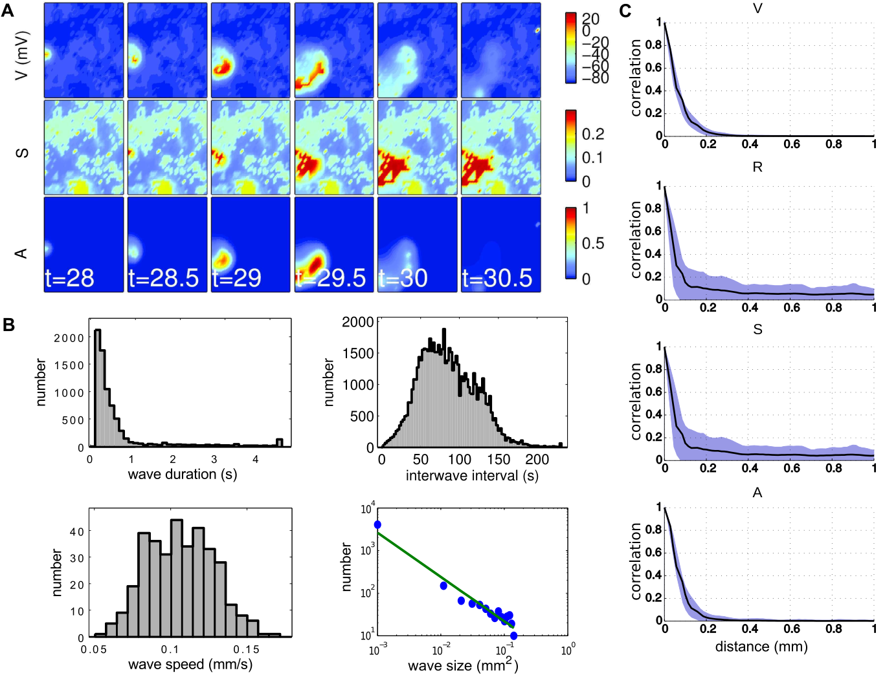When is the medium excitable?
- Non-dimensionalize, separate into fast-slow dynamics $$\begin{align*} v_t &= f(v,a;r)\\ a_t &= \nabla^2 a + \frac{k(v,a)}{\tilde{\tau}_{ACh}}\\ \end{align*} $$
- Shift to traveling frame at speed $c$: $x' = x - ct; t' = t$
- Heteroclinic orbit from rest to excited state is wave front $$\begin{align*} 0 &= f(v,a;r) + cv'\\ 0 &= ca' + a'' + \frac{k(v,a)}{\tilde{\tau}_{ACh}}\\ \end{align*} $$

When is the medium excitable?
- Non-dimensionalize, separate into fast-slow dynamics $$\begin{align*} v_t &= f(v,a;r)\\ a_t &= \nabla^2 a + \frac{k(v,a)}{\tilde{\tau}_{ACh}}\\ \end{align*} $$
- Shift to traveling frame at speed $c$: $x' = x - ct; t' = t$
- Heteroclinic orbit from rest to excited state is wave front $$\begin{align*} 0 &= f(v,a;r) + cv'\\ 0 &= ca' + a'' + \frac{k(v,a)}{\tilde{\tau}_{ACh}}\\ \end{align*} $$

Model predicts outcome of pharmacological manipulations
- Nicotinic ACh receptor agonists/antagonists affect conductance $g_{ACh}^M$
- Wave speed highly sensitive to $g_{ACh}^M$.
- Wave frequency affected
- Forskolin affects second messenger cAMP, affects sAHP
- Moderate change in wave frequency
- No change in wave speed
Analog to forest fire model exhibiting self-organized criticality
- Predict occurance of power-law distributed wave sizes
- Model determines spatiotemporal properties of waves
- Tool to probe role of retinal waves in development
Three problems

Encoding in primary motor cortex
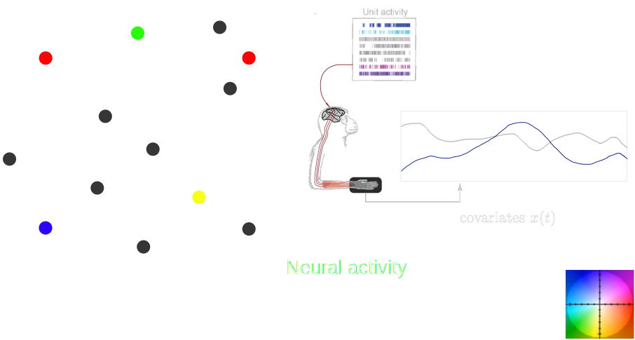Encoding in primary motor cortex

Phillips and Porter 1977
- Motor cortical neuron representations are complex:
- kinetics — single-unit recordings (1960s)
- kinematics — center-out task (1980s)
- dynamics — high-dimensional recordings (2000s)
- Understanding motor encoding can inform design of BCIs for control of prosthetic limbs
Intracortical BCIs
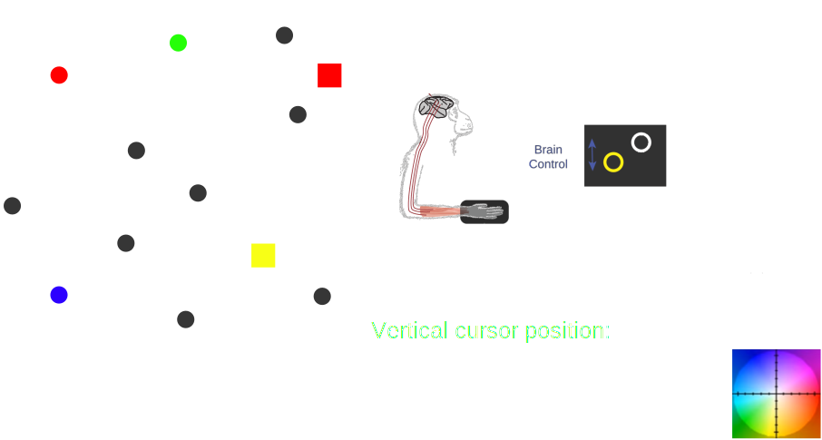Flexibility and constraint in intracortical BCIs


Single units:
- Volitional control of individual neurons through feedback and conditioning [Fetz 1969]
- Independent of natural movement association [Moritz and Fetz 2011]
Many units:
- Brain-control mappings utilizing natural motor repertoire are most effective [Sadtler et al 2014]
Dual-control BCIs: probing the 'units of volitional control'


Milovanovic et al 2015
- Application in stroke patients
- Does concurrent hand movement interfere with brain control?
- Milovanovic et al 2015 show performance independent of unit tuning
How does the network reconfigure for a dual-control BCI?
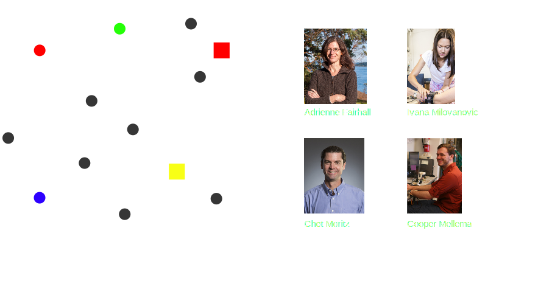How does the network reconfigure for a dual-control BCI?
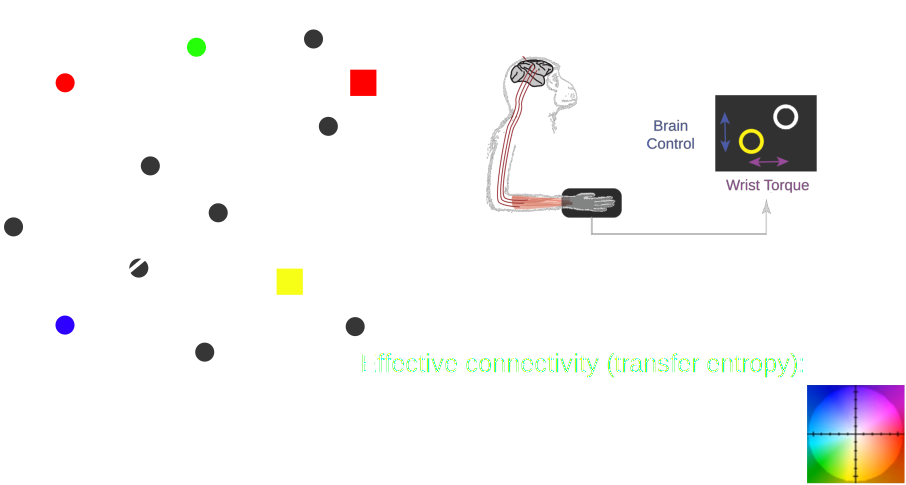Experiment

- Utah multi-electrode array implanted in hand/wrist area of primary motor cortex of Macaque monkey
Random target pursuit task
- Target appears randomly outside radius from cursor position
- Acquire target within fixed time, hold for 1s
Control vs non-control units
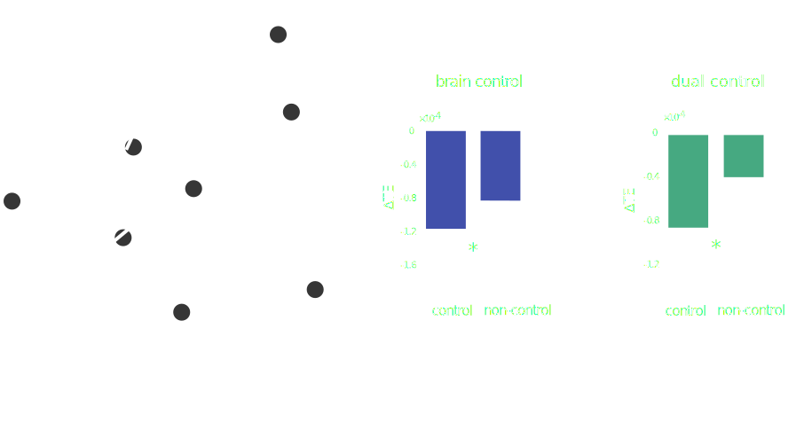Lansdell et al arXiv:1702.07368
Co-tuned units: control vs non-control
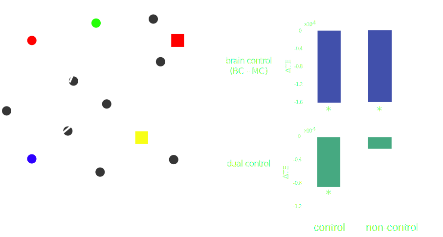Lansdell et al arXiv:1702.07368
How does the network reconfigure for a dual-control BCI?
- Brain-control: overall decrease in effective connectivity to control units, regardless of co-tuning
- Dual-control: effective connectivity between co-tuned units does not change, except when control unit involved
Intrinsic variability predicts performance
Inspired by Sadtler et al 2014
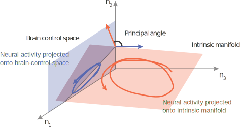Intrinsic variability predicts performance
- Gaussian process factor analysis (GPFA) used to identify low-dimensional subspace
- Identify when spaces are significantly non-orthogonal

Intrinsic variability predicts performance

- High performance requires at least one unit with high intrinsic variance
Summary
- Intrinsic variance of control units only variable predictive of performance — motor unit tuning does not constrain how task performed
$\Rightarrow$ Provided constraints of existing circuitry are considered, BCI design can utilize motor cortical adaptability
$\Rightarrow$ Internal and latent dynamics important
Three problems

Relating full neural activity with behavior

C. Dupre, Yuste lab
Why Hydra?
- Small (0.5mm-1.5cm)
- Translucent, nerve net
- Does not age
Multi-frame optic flow image registration

Garg et al 2013
Method
2. Select regular set of inter-frames
1. Select very sparse set of reference frames


3. Use optic flow+image segmentation to label regions mapping to reference frames

Method
4. Within each interframe block run MFSF for dense registration

Method
5. Associate each path from (4) with point in a ref frame using optic flow+segmentation (3)

Thus every tracked path is associated with a point in a reference frame
Long term path association
Summary
- Registration between similar frames — track Hydra pose throughout extended video sequences.
- Can be applied to other registration/tracking problems
A preprocessing step to "cracking the neural code" in Hydra
Acknowledgments
- Adrienne Fairhall
- Nathan Kutz
- Chet Moritz
- Fairhall lab
- Anatoly Buchin
- Rich Pang
- Moritz lab
- Ivana Milovanovic
- Cooper Mellema
- Charlie Matlack
- Robert Robinson
- Yuste lab (Columbia)
- Rafael Yuste
- Thibault Lagache
- Christophe Dupre
- John Szymanski
- Kevin Ford
- Eberhard Fetz
- David Kleinfeld (UCSD)
- Yonatan Aljadeff (U. Chicago)